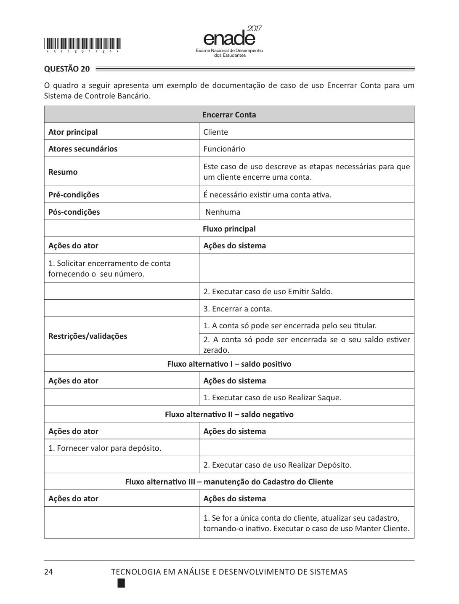

Considere os requisitos levantados para um sistema hospitalar:
São requisitos não funcionais apenas
II é disponibilidade e IV é usabilidade — ambos atributos de qualidade. I e III descrevem ações do sistema, logo são funcionais. Note que IV é não funcional apesar de mencionar uma tarefa: o que se restringe é a facilidade de operação, não a função.
Banco IA · es-0002 · habilidade J do perfil do egresso
Após a execução do trecho, o valor impresso é
01 soma <- 0
02 para i de 1 ate 6 faca
03 soma <- soma + i
04 fim-para
05 escreva(soma)Estado marcado, ainda sem correção: acento, porque ainda é uma ação sua e reversível. Só depois de corrigir é que a cor vira estado — verde ou vermelho.
Visor do caderno original — mesa de luz

O que mudou. O filter: invert(1) hue-rotate(180deg)
do tema escuro saiu. Inverter uma digitalização não produz um documento escuro: produz
cinza lamacento, com halo em volta de cada haste de letra e as fotos do caderno em negativo.
O objeto que você mais olha era o mais feio da tela.
No lugar. A página fica no branco verdadeiro dela, sobre um fosco. No tema escuro o fosco vai a quase preto e o papel branco vira a fonte de luz — que é como se lê um documento numa mesa de luz, e é o que o olho espera.
Limpeza aplica grayscale + contrast, para os
cadernos de 2008 e 2011, que estão amarelados e com fundo sujo.
Atenuar baixa o brilho sem inverter — resolve de noite o que a inversão
tentava resolver, sem destruir o traço do tipo.
A lei da cor
Rampa de calor, exclusiva de estatística — nunca de interface:
Acento = existe algo acionável ali. Link, botão, alternativa
marcada, aba corrente. Nada mais. Caiu a border-left: 3px solid var(--accent)
que hoje enfeita todo cartão, todo aviso e todo painel do index: quando o verde
marca também o que não se clica, ele deixa de significar "clique aqui".
Estado = algo aconteceu. Acerto, erro, em branco, expirado. Nunca decorativo, nunca em elemento neutro.
Neutro = todo o resto. Inclusive número que não é resultado, borda, cartão e cabeçalho. A hierarquia passa a vir do peso e do filete, não da cor.
Jogo de sinais — traço 1,25, o mesmo peso do filete
Oito sinais, um único peso de traço, ponta reta e canto vivo — a mesma gramática do filete de 1 px que separa as seções. Existindo o jogo, ninguém sente falta de emoji: a alternativa ao ✅ não é "nada", é um sinal que pertence ao sistema.
Notas de direção
Tipografia. Source Serif 4 para ler, IBM Plex Sans para a
interface, IBM Plex Mono para dado — as três em .woff2 dentro de
assets/fontes/, 198 KB no total, licença OFL. Nada sai para a internet,
como o resto do material. Georgia e system-ui ficam só como fallback, junto de
Sitka Text e Constantia, que já estão instaladas no Windows e são escolhas, não defaults.
Escala. Razão 1,2 a partir de 16 px e ritmo vertical de 4 px. O corpo de leitura é a única exceção deliberada: 18/30, medida óptica, porque 18 px em Source Serif com entrelinha de 30 é onde a leitura longa cansa menos. Saíram os 14,5 / 16,5 / 12,5 espalhados pelo CSS atual.
Pautado. O papel tem pauta de 30 px em 4,5 % de
opacidade, alinhada à linha de base do texto — não é imagem, é
repeating-linear-gradient. O instrumento tem quadriculado de 8 px. Dois
substratos, custo zero de asset, e é o que dá "caderno" e "mostrador" sem cair em
skeuomorfismo.
Densidade. Leitura respira (48 px de respiro, medida de 68 ch); instrumento comprime (46 px de faixa, filete de 1 px em vez de cartão). Enunciado e cinco alternativas cabem numa tela de 1080 p — hoje não cabem.